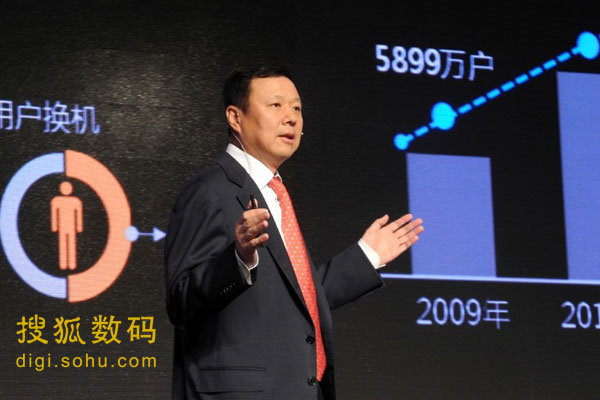

6月21日晚间消息，今天"2013年天翼手机交易会暨移动互联网论坛"在广州琶洲会展中心召开。这次大会既是CDMA终端产业一年一度的盛会，也是互联网行业的一次盛典。参会的既有终端厂商、经销商等终端产业链合作伙伴，也有互联网公司、应用与内容提供商等互联网领域的众多公司，使本次大会成为推动终端与互联网行业融合发展的一次盛会。
今年的天翼手机交易会是中国电信连续举办的第五届手机交易会，其规模远超前四届，已经成为全球最大的手机交易会。展会面积达到4万平米，参会企业超过万家。来自全国和海外的终端代理商、经销商及零售商与参展厂商将在交易会上进行现场沟通和订货。交易会期间预计将有业内人士和消费者共计30万余人到场参观交流、洽商合作。
搜狐IT了解到，本届交易会为期三天。在今天的开幕式上，中国电信联合众多终端经销商与多家终端厂商共同签署了总量达5100万部的天翼智能手机采购确认书。这些经销商中既有中邮设备、普天太力、天音通信、酷人通讯等国代商，又有苏宁云商、国美电器、乐语、迪信通、中邮时代、松联科技等连锁卖场，以及京东商城等电商公司。与2012年天翼手机交易会相比，此次参与采购的经销商更加多元化，智能手机的种类更加丰富，采购规模进一步扩大。
下午，隆重举行了"中国电信终端及移动互联网产业高峰论坛"。中国电信董事长王晓初在演讲中指出，当前互联网技术正在驱动新工业革命发展，互联网深刻影响和改变着传统经济活动，这关键是要紧紧围绕客户价值，以开放、平等、合作等互联网核心思维为指引，在研发、制造、营销、服务等传统的产业链环节，对产业链进行改进和提升。
针对目前被热炒的4G网络，中国电信集团公司市场部总经理刘平表示，中国电信加大4G实验网络建设，将采用FDD+TDD的混合组网。刘平表示，中国电信正在加大3G实验网建设，将将采用FDD+TDD的混合组网。4G的数据卡将采用TDD模式或者FDD模式。一旦4G进入商用，中国电信就爱那将推出4G网络NFC支付业务。
另外，本次交易会还举行 "人机：新交互时代"主题论坛、"中国电信信息化应用规模发展论坛"、"CDMA2000手机设计研发产业联盟第四次会员大会暨技术研讨会"、以及"移动互联网开放合作联盟（OMIA）理事会议"等诸多分论坛会议。从会议内容安排上看，终端和互联网方面的内容基本平分秋色，充分显示了中国电信产业合作范围进一步扩大，产业合作进一步强化。
据了解，在本次交易会上将有200多家企业参展，大会期间将有近百款终端与应用新品发布。8000多家核心经销商和零售店将参与终端订货，这将进一步推动中国电信天翼终端运营社会化，促进中国电信天翼终端市场规模化发展。
自中国电信2008年开始运营移动业务以来，短短5年的时间里，CDMA产业链规模已扩充了数倍，中国电信的天翼移动业务用户也快速增长。中国电信董事长王晓初透露，截至4月底，中国电信天翼移动业务用户已超过1.72亿户，预计到2013年底，中国电信移动业务用户将达到2亿户。